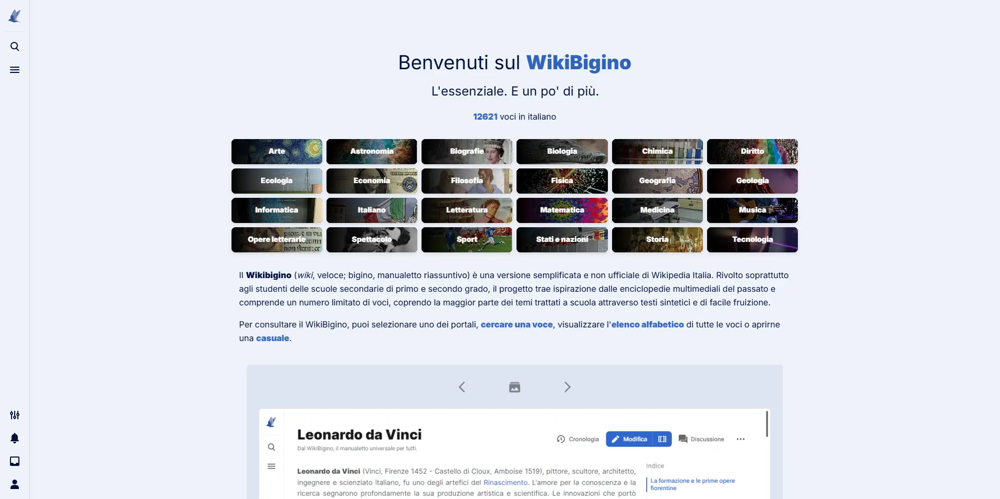
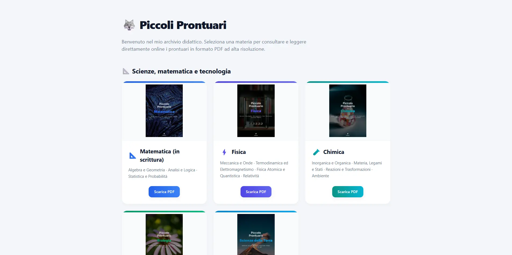
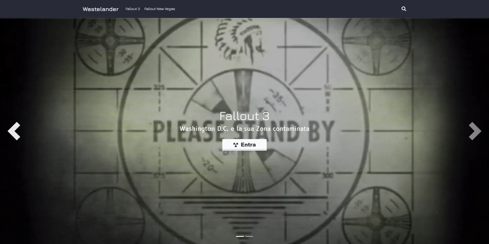

WikiBigino
Un ibrido fra un bignami digitale e un'enciclopedia per studenti, con le voci essenziali di tutte le materie principali.
Apri ProgettoUna selezione delle mie ultime creazioni.

Un ibrido fra un bignami digitale e un'enciclopedia per studenti, con le voci essenziali di tutte le materie principali.
Apri Progetto
Una collana di manuali sintetici che coprono le principali materie di studio della scuola secondaria di secondo grado, utili per un ripasso veloce.
Apri Progetto
Una wiki condensata e senza fronzoli, ideale per giocare al meglio Fallout 3 e Fallout: New Vegas.
Apri Progetto